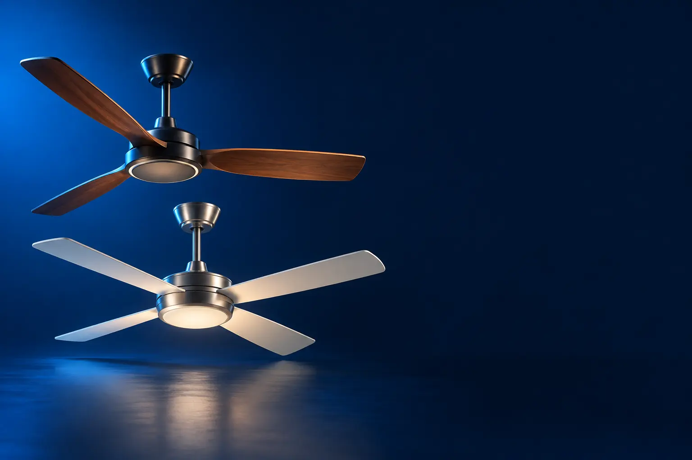

CLÁSSICO (COM LUSTRE)
Melhor ventilador de teto custo-benefício
O ventilador de teto tradicional, com lustre para lâmpadas.

Melhor custo-benefício em ventilador de tetoVentisol Aires Inverter
CURADORIA TECHAPROVADO · 2026
Ventilador de teto ventila o cômodo inteiro sem ocupar espaço. Separamos 6 modelos em 2 perfis e dizemos para quem cada um vale a pena.

NOSSA LEITURA
Os modelos inverter gastam menos energia e têm mais velocidades. Controle remoto evita levantar para mudar a velocidade. Confira a altura do teto: pelo menos 2,5 m.
COMECE POR AQUI
CLÁSSICO (COM LUSTRE)
O ventilador de teto tradicional, com lustre para lâmpadas.
COM LUZ LED E PÁS RETRÁTEIS
Luz LED integrada e visual moderno; as pás somem quando desligado.

A FICHA, TRADUZIDA
01 - INVERTER E DC
Motores inverter e DC ajustam a rotação com mais precisão, gastam menos energia, fazem menos barulho e oferecem mais velocidades (até 6).
Para quem deixa o ventilador ligado a noite toda, a economia aparece na conta.
Motores reversíveis giram ao contrário no inverno, empurrando o ar quente do teto para baixo.
02 - LUZ
Os clássicos têm lustre para lâmpadas comuns. Os modernos têm LED integrado, muitas vezes com temperatura de cor ajustável (luz amarela, neutra ou branca).
LED integrado dispensa comprar lâmpadas e costuma ser regulável pelo controle.
Para quarto, luz amarela à noite ajuda a relaxar.
03 - INSTALAÇÃO
O teto precisa ter pelo menos 2,5 m, para as pás ficarem a uma distância segura da cabeça. A instalação mexe na fiação: chame um eletricista.
O ventilador deve ser preso numa caixa de teto firme ou em laje, nunca só no forro de gesso.
Confira a voltagem: muitos são bivolt, mas alguns têm versões separadas.
04 - CONTROLE
Os modelos simples usam chave na parede para ligar e mudar a velocidade. Os com controle remoto permitem ajustar da cama e programar o desligamento.
Pilhas fracas no controle são a causa mais comum de falha: troque antes de chamar assistência.
Alguns aceitam módulos Wi-Fi para controlar pelo celular.
A CURADORIA EM DETALHE
6 modelos da pesquisa
PERFIL · 3 MODELOS, DA ENTRADA AO TOP DE LINHA
Os ventiladores de teto clássicos têm 3 pás e lustre para duas lâmpadas. Os modelos inverter gastam menos energia, têm mais velocidades e controle remoto.

CLÁSSICO · ENTRADA 1 de 3
3 pás · lustre para 2 lâmpadas · chave CV3
Ver preço na AmazonPOR DENTRO DA ESCOLHA
Ventilador de teto clássico com pás de garras tratadas, motor e haste de aço tratado, lustre para 2 lâmpadas e chave de parede CV3 para escolher a velocidade.
Ventilador de teto clássico, com motor e haste de aço tratado, pás de garras tratadas e lustre para 2 lâmpadas. A velocidade é escolhida na chave de parede CV3.
| Pás | 3 |
|---|---|
| Controle | Chave de parede |
| Voltagem | 127 V |
Fonte: ficha e descrição do anúncio, conferidas em 02/11/2026. Dados informados pelo fabricante.
CLÁSSICO · CUSTO-BENEFÍCIO 2 de 3
Melhor custo-benefício em ventilador de teto
Inverter · controle remoto · 6 velocidades · timer · bivolt
Ver preço na AmazonPOR DENTRO DA ESCOLHA
Ventilador de teto com motor inverter, controle remoto, 6 velocidades, timer de até 4 horas, lustre com iluminação LED para duas luminárias e bivolt.
Por pouco mais que o Fênix comum, traz inverter, controle remoto, timer e bivolt.
| Motor | Inverter |
|---|---|
| Controle | Remoto, timer 4 h |
| Voltagem | Bivolt |
Fonte: ficha e descrição do anúncio, conferidas em 02/11/2026. Dados informados pelo fabricante.

CLÁSSICO · TOP DE LINHA 3 de 3
Top de linha clássico
Inverter · controle remoto · lustre · bivolt
Ver preço na AmazonPOR DENTRO DA ESCOLHA
O Fênix com motor inverter, controle remoto, pás com garras integradas, motor e haste de aço tratado, lustre para 2 lâmpadas e bivolt.
O desenho da Ventisol com motor inverter.
| Motor | Inverter |
|---|---|
| Controle | Remoto |
| Voltagem | Bivolt |
Fonte: ficha e descrição do anúncio, conferidas em 02/11/2026. Dados informados pelo fabricante.
PERFIL · 3 MODELOS, DA ENTRADA AO TOP DE LINHA
Os modelos modernos trazem luz LED integrada com temperatura de cor ajustável, motor DC silencioso e, em alguns, pás retráteis que se escondem quando o ventilador está desligado, parecendo uma luminária.
LED E RETRÁTIL · CUSTO-BENEFÍCIO 1 de 3
Melhor custo-benefício com luz LED
LED 16 W com 3 tons · motor DC · reversível · 6 velocidades
Ver preço na AmazonPOR DENTRO DA ESCOLHA
Ventilador de teto de 106,7 cm com pás de dois lados (preto e madeira), luz LED de 16 W em 3 temperaturas de cor e brilho ajustável, motor DC silencioso, 6 velocidades e rotação reversível.
Motor DC e luz LED ajustável por preço de ventilador inverter comum, com acabamento que combina com decoração de madeira.
| Luz | LED 16 W, 3 tons |
|---|---|
| Motor | DC |
| Tamanho | 106,7 cm |
| Cômodo | 12 a 18 m² |
Fonte: ficha e descrição do anúncio, conferidas em 08/11/2026. Dados informados pelo fabricante.

LED E RETRÁTIL · ALTERNATIVA 2 de 3
Outro caminho: pás retráteis
4 pás retráteis · LED 36 W · controle remoto · bivolt
Ver preço na AmazonPOR DENTRO DA ESCOLHA
Ventilador de teto com 4 pás retráteis de ABS transparente, 6 velocidades, luz LED de 36 W com 3 temperaturas de cor, controle remoto e bivolt.
A luz de 36 W ilumina um cômodo inteiro sem lâmpada extra.
| Luz | LED 36 W, 3 tons |
|---|---|
| Pás | 4 retráteis |
| Voltagem | Bivolt |
Fonte: ficha e descrição do anúncio, conferidas em 02/11/2026. Dados informados pelo fabricante.

LED E RETRÁTIL · TOP DE LINHA 3 de 3
Top de linha com luz LED
Pás retráteis · motor DC inverter · LED com dupla regulagem
Ver preço na AmazonPOR DENTRO DA ESCOLHA
Ventilador de teto com pás retráteis, motor inverter DC (BLDC) silencioso e reversível e luz LED com regulagem independente de brilho e de temperatura de cor.
Junta pás retráteis, motor DC e a regulagem de luz mais completa da lista.
| Luz | LED, brilho e tom ajustáveis |
|---|---|
| Motor | Inverter DC, reversível |
| Pás | Retráteis, 106 cm |
Fonte: ficha e descrição do anúncio, conferidas em 02/11/2026. Dados informados pelo fabricante.
Nenhum modelo encontrado. Tente outro termo ou volte para Todos.
LADO A LADO
| Modelo | Perfil | Posição | Voltagem | Destaque |
|---|---|---|---|---|
| Ventisol Fênix 370 (127 V) | Clássico | Entrada | 127 V | 3 pás · lustre para 2 lâmpadas · chave CV3 |
| Ventisol Aires Inverter | Clássico | Custo-benefício | Bivolt | Inverter · controle remoto · 6 velocidades · timer · bivolt |
| Ventisol Fênix Inverter com controle remoto | Clássico | Top de linha | Bivolt | Inverter · controle remoto · lustre · bivolt |
| Airwit 106,7 cm com luz LED (preto e madeira) | LED e retrátil | Custo-benefício | LED 16 W com 3 tons · motor DC · reversível · 6 velocidades | |
| Elgin Silence Air Pro retrátil | LED e retrátil | Alternativa | Bivolt | 4 pás retráteis · LED 36 W · controle remoto · bivolt |
| Airwit Retrátil Inverter 106 cm | LED e retrátil | Top de linha | Pás retráteis · motor DC inverter · LED com dupla regulagem |
CONSIDERAÇÕES FINAIS
Ventiladores de teto genéricos ficaram de fora.
O Ventisol Aires Inverter: controle remoto, timer, 6 velocidades e bivolt.
Sim: gasta menos, faz menos barulho e tem mais velocidades.
Para quem quer visual de luminária, sim. Ventila um pouco menos que pás fixas grandes.
2,5 metros.
Porque ele muda várias vezes por dia. O botão leva ao valor atualizado na loja.
TRANSPARÊNCIA EDITORIAL
Separamos os ventiladores de teto entre clássicos e modernos com luz LED e montamos uma escada de preço em cada perfil. Cada modelo precisa responder com clareza "para quem ele é o certo".
Em cada perfil há modelos em faixas de preço diferentes, e cada degrau precisa entregar algo que o anterior não entrega. Dois modelos com a mesma proposta não entram juntos.
Ficha e especificações foram conferidas nos anúncios das lojas em 02/11/2026.
Os links de compra desta página são de afiliado: se você comprar por eles, o TechAprovado pode ganhar uma comissão, sem custo adicional para você. Isso não muda a ordem nem a escolha dos produtos.
📲 GUIAS E DICAS NO SEU FEED
Dicas práticas antes de comprar, em carrosséis e vídeos curtos, sempre com link para o guia completo.